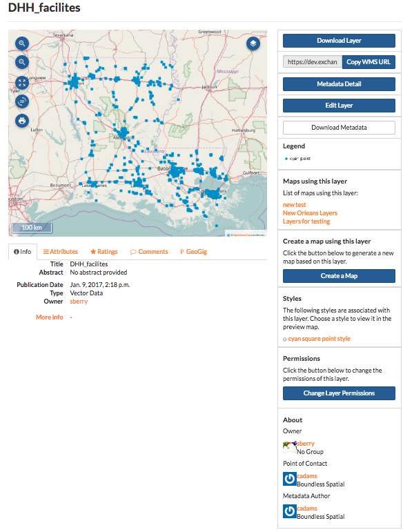
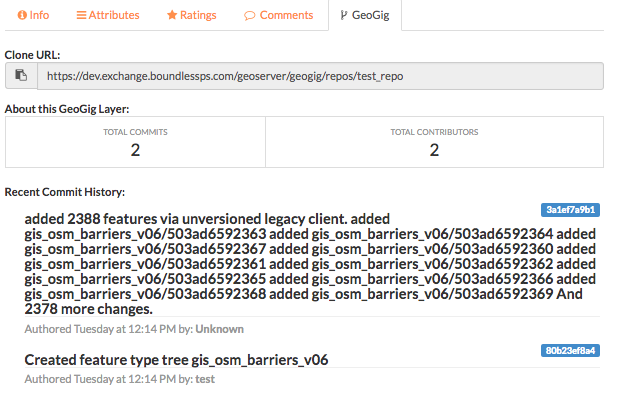

Working with Layers¶
Exchange allows you to upload layers for better visualization of your data, and to create a more detailed map.
Exchange supports the following Vector formats:
- ESRI Shapefile
- CSV (Comma Separated Value)
- Google Earth KML
- GeoJSON
The following are the supported Raster formats:
GeoTIFF
ERDAS Imagine
JPEG2000
NITF (National Imagery Transmission Format)
CIB (Controlled Image Base)
- 1 Meter
- 5 Meter
- 10 Meter
CADRG (Compressed Arc Digitized Raster Graphic)
- GNC (Global Navigation Chart)
- JNC (Jet Navigation Chart)
- ONC (Operational Navigation Chart)
- TPC (Tactical Pilotage Chart)
- JOG (Joint Operations Graphic)
- TLM100 (Topographic Line Map 100K)
- TLM50 (Topographic Line Map 50K)
All file types listed can be uploaded as a Zip Archive (.zip).
Once the layers are uploaded, they will be available to other users in Exchange.
Uploading a layer¶
Click the Data link on the Exchange toolbar, and select Upload Layers in the drop-down menu to open the Upload Layers page.

Click the Choose Files button. This will open a local file dialog. Navigate to your data folder and select the file(s) for the geospatial layer.
OR: Drag and drop your file(s) into the Drop files here area.
Note: Some file types require multiple files to create a complete layer. If you are uploading an ESRI Shapefile, be sure to include the .dbf, .prj, .shp, and .shx files.

Setting permissions¶
The social design of Exchange allows users to coordinate on projects by sharing access to the same layers and maps; however, there may be instances when you want to limit who has what access to your layers. In Exchange, you can establish permissions for who can view, edit, and manage layers. Permissions can also be set for editing styles and metadata.
By default, when a layer is uploaded, the permissions are set so that only the person who uploaded the layer has access to it. If you want other people to view, download, or edit the layer, you must change the permissions to allow it. Without changing permissions, other registered users will not see it listed as an available layer.
On the right side of the page, under the Who can view and Who can download sections, add the name(s) of registered users or groups. This will ensure anonymous view access is disabled, and only those users specified are able to see your layers.
In the same area, under Who can edit data for this layer?, add the users or groups who have permission to edit the layer.

If you are loading raster data, click the Upload files button to import your files into the default spatial data store.
Note: The following steps are optional. If you would like to add version control or temporal information to your vector data, please continue to the next step. You can add one or both options. You do not have to do either, and can click the Upload files button to complete your upload.
Version management¶
Even with established permissions, it’s still useful to know who has made edits to the data. Exchange uses GeoGig repositories to maintain version control of your vector data. By uploading layers into either an existing repository, or a newly created one, you can see the history of changes and who made them. Please reference the Editing and Version Management section for further information.
- Click the Import to Geogig checkbox.
- Select an existing repository from the drop down list, or create a new one by typing the name of a new repository.

- If you are not configuring time attributes, click the Upload files button to complete your upload.
Configure time attributes¶
A feature can currently support one or two time attributes. If a single attribute is used, the feature is considered relevant at that single point in time. If two attributes are used, the second attribute represents the end of a valid period for the feature.
A time attribute can be:
- A date - 02/15/2016 11:23 AM
- Text that can be converted to a timestamp - Wednesday December 7, 2016 9:47 AM
- A number representing a year - 2016, 1978
For text attributes, you can specify a custom format, or use the “best guess” approach. When selecting the Convert Text Attribute option, you will select the attribute you want to use from the drop down list. Then, either select Best Guess or Custom from the list. Custom format will allow you to add the format that exists in the attribute table, and format it to something Exchange can handle.
The most common formatting flags are:
- y - year
- M - month
- d - day of month
- h - hour of the day (0 - 23)
- k - hour of the day (1-24)
- m - minute in an hour
- s - seconds in a minute
The “best guess” will handle date and optional time variants of ISO-8601. In terms of the formatting flags noted above, these are:
yyyy-MM-dd’T’HH:mm:ss.SSS’Z’
yyyy-MM-dd’T’HH:mm:sss’Z’
yyyy-MM-dd’T’HH:mm:ss’Z’
yyyy-MM-dd’T’HH:mm’Z’
yyyy-MM-dd’T’HH’Z’
yyyy-MM-dd
yyyy-MM
yyyy
Note: Single quotes represent a literal character.
To remove ambiguity, repeat a code to represent the maximum number of digits. For example, yyyy or MM instead of yy or M.
- Click the Configure Time checkbox, and select the Upload files button.
You will be prompted to specify more information in order to complete your upload. Select the Continue link.
- Complete the time attribute information, and click the Next button.

- Click the Upload files button to complete your upload. A Performing Final GeoServer Config Step dialog will display showing the progress of the upload.
Once your layer has finished uploading, click the Layer Info button to view the information page.

Layer information¶
Each layer has an information page associated to it, which has several options for managing the layer’s data. Information is available for the following:
- Info – Displays general information about the layer
- Attributes - Lists the features in a layer, and the nonspatial information about the feature
- Ratings – Based on the ratings of other users
- Comments – Any comments on the layer from users
- Legend – Maps using this layer – What other maps within Exchange are using the layer
- Permissions – How others can see or modify this layer
- Styles – What styles are associated to the layer
- About – Provides information on the owner, Point of Contact and Metadata Author
- To access Layer Information, click the Data link on the Exchange toolbar, and select Layers from the drop-down menu. This will open the Explore Layers page. Here you will see a list of all of the available layers. Each layer has a thumbnail image, as well as the title, author, and any associated keywords.
- Click the title of the layer you want to access.

- The information page for the layer will open.

Using the map features¶
Within the Map Information page, there are some map features that will help you view the layer more in depth.
Zoom - Select the Zoom In or Zoom Out button to zoom to a specific location. Depending on the basemap, you may be able to zoom in as close as 1:10 meters.


Zoom to the Initial Extent - Return to the original extent of the map.

Switch to Globe (3D) - Select this button to view this map as 3D.

Print Map - Select Print Map to print a copy of the layer.

Layers - Select the Layers button to turn any of your layers off or on.

Click the Basemap button to select a different basemap style.

Layer detail tabs¶
There are five tabs with information pertaining to the particular layer: Info, Attributes, Ratings, Comments, and GeoGig.
The Info tab is the default display, and contains basic information about the layer, such as the title, who created it, and when it was published.

The Attributes tab displays the layer attribute table. Layer attribute statistics will only display if the value is a numeric attribute, otherwise, no statistics will be calculated.

The Ratings tab displays all ratings given to a layer by other users. Click on a star to rate the layer (one to five stars). Click the Cancel this rating icon to delete your rating.

The Comments tab allows you to see what others are saying about this layer, as well as leave your own comment. Click the Add Comment button to leave a comment about the layer. When you’ve finished, click the Submit Comment button.

The GeoGig tab shows you the history of edits that have been made to the layer, when they were made, and by whom.

Editing metadata and managing layers¶
Each layer’s information page allows you to view the information that makes up the layer. Exchange allows you to edit metadata pertaining to a layer that you have uploaded, as well as any layers you are given permissions to access by other users.
Edit metadata¶
Metadata is information about the layer, such as the owner, title, purpose or restrictions on a layer. You can include as much information about the layer as you feel is important; the more you can tell other users about your layer, the better. If you have questions about what to put in a field, hover your mouse over the area. An information balloon will explain what is required.
- Click the Edit Layer button, and select the Edit button under Metadata. The Edit Metadata page will display.

- Edit the information fields to include anything pertinent to the layer. Note: Once you begin to edit the metadata, the Category field becomes mandatory, and you must select at least one.
- Click the Update button at either the top or bottom of the page to save your changes.
Edit permissions¶
Layer permissions are established when the layer is first imported, but the administrator/owner of the layer can adjust those permissions as needed. Permissions allow you to set who can view/download the data, who can make edits, and who can manage it.
- Click the Change Layer Permissions button.
- Set permissions for the resource to give the required access to the layer. Permissions can be granted to Anyone for viewing and downloading, if the checkbox is selected. Edit permissions can be given to registered individuals or groups.

- Click the Apply Changes button to save.
Manage styles¶
Layers can have multiple associated styles. The Styles section tells you which style(s) is currently associated to the layer.

- Click the Edit Layer button, and then Manage under Styles

- Click the name of a style in the left-hand list to select it, and move it to the right-hand list.

- Click a style in the right-hand list, and click the arrows between the lists to remove a style.
- Click the Update available Styles button to save changes.
Replace a layer¶
Replacing a layer allows you to upload a new layer, taking the place of the current layer.
- Click the Edit Layer button, and select the Replace button.

- Follow the instructions to upload a new layer.
Remove a layer¶
Removing a layer will delete it completely from Boundless Exchange.
- Click the Edit Layer button, and select Remove.
- Verify your selection by clicking the Yes, I am sure button.

Downloading data from a layer¶
Within Exchange, there are two ways to extract data and metadata, download a layer or download a layer’s metadata. This facilitates the flow of geospatial data in (import) and out (export) of Exchange.
Download data¶
- Click the Download Layer button.
- Select the format in which you’d like the data to be downloaded. Exchange currently offers the following formats for use in multiple geospatial platforms:

- Save the file to your computer when the Save As dialog box opens.
Download metadata¶
- Click the Download Metadata button.
- Select the format in which you’d like to download the metadata.

- Save the file to your computer when prompted.